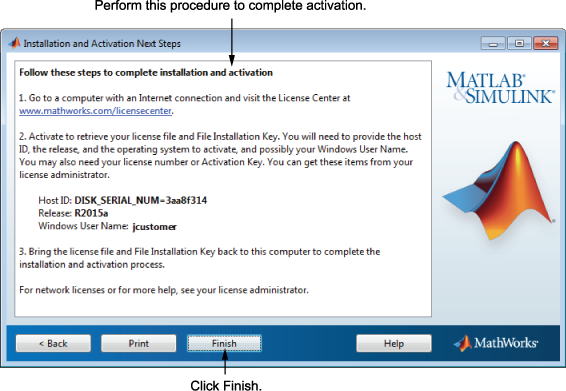

설치 및 활성화 다음 단계 대화 상자에는 MathWorks® 웹 사이트의 라이선스 센터에서 파일 설치 키를 가져오는 데 필요한 정보가 들어 있습니다. 이 정보는 다음과 같습니다.
호스트 ID
릴리스 번호(예: R2015a)
운영 체제 사용자 이름(참고로, 활성화 작업에는 사용자 이름의 대/소문자가 구분됨)

파일 설치 키를 받으려면:
이 대화 상자에 표시된 정보를 복사하고 마침을 클릭하여 인스톨러를 종료합니다. Windows 시스템과 Linux 시스템의 경우 인쇄를 클릭하여 이 정보를 인쇄할 수 있습니다.
인터넷에 연결되어 있는 컴퓨터를 사용하여 MathWorks 웹 사이트에서 설치를 진행하는 본인의 계정으로 로그인합니다.
라이선스 센터로 가서 이 대화 상자의 정보를 입력합니다. MathWorks에서는 이 정보를 사용하여 해당 라이선스에 필요한 라이선스 파일과 파일 설치 키를 생성합니다.
컴퓨터로 돌아가서 인스톨러를 다시 실행합니다. 파일 설치 키와 라이선스 파일을 받으면 인터넷 연결 없이도 소프트웨어를 설치하고 활성화할 수 있습니다.